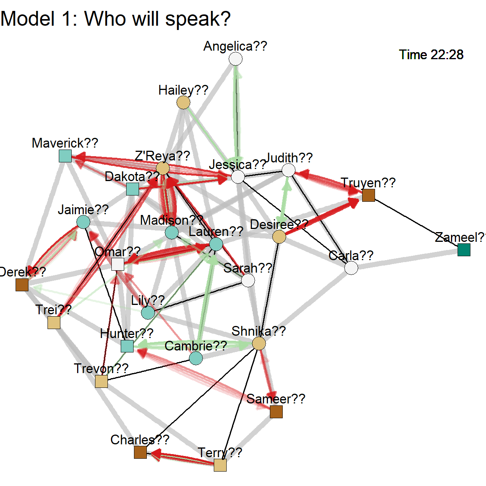
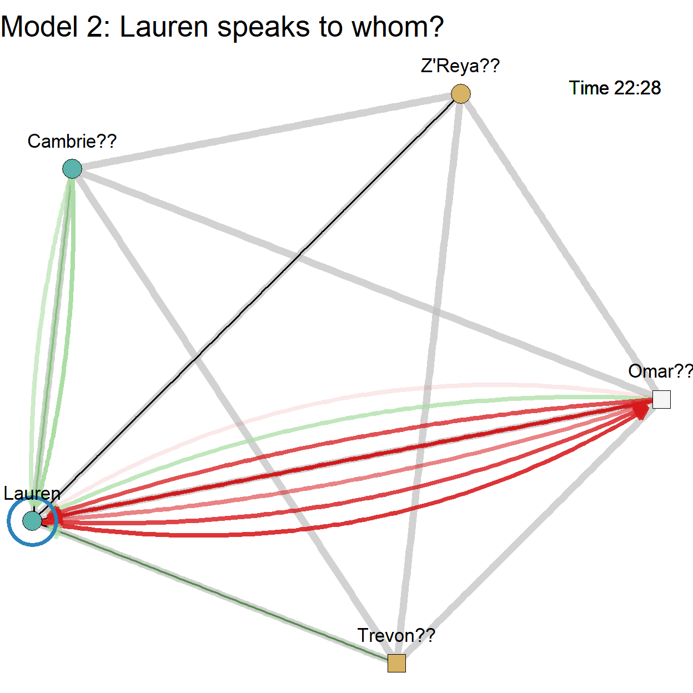

In the preceding sessions, we have tried to predict a characteristic of a tie, namely, whether a statement from one pupil to another was positive or negative.
we have assumed but not predicted that the ties (statements) exist. In the current session, we try to predict the presence versus absence of ties. Can we predict that a pupil says something to another pupil or starts playing with another pupil at a particular moment?
Basically, we are addressing network change: Can we predict how the structure of a network changes?

The prediction problem consists of two steps and models:
Note that there is a third step, namely predicting the characteristics of a tie once we know who will send and receive the tie. We discussed this step in Session 5 (predicting tie valence).
goldfish packageWe use the goldfish package to estimate models for predicting tie creation.
# Use this command to install the goldfish package from github.
remotes::install_github("snlab-ch/goldfish")
# Note: this requires the remotes package, which should be installed
# automatically when you install the NikitaRocks package.Exercises
Run the above code to install the goldfish package.
Replace the code by ?goldfish and run this (should open new browser window with general info on the package), to check that installation was successful.
For installation problems (particularly on Mac OSX), consult https://github.com/snlab-ch/goldfish (https://github.com/snlab-ch/goldfish#installing-openmp-on-mac-osx).
The goldfish package automatically creates the predictors for sender, receiver, (dis)similarity, other tie, same tie, and local network context effects that you chose. That saves us a lot of work!
Available effects:
| Effect | Function | Description | Model |
|---|---|---|---|
| Sender | ego(attribute) | tendency of actors to be more active when they score high on the attribute | rate |
| Receiver | alter(attribute) | tendency to chose alter when alter has a high score on the attribute | choice |
| (Dis)similarity: | |||
| - exact similarity | same(attribute) | tendency of an event happen if sender and receiver have the same attribute (homophily) | choice (one-mode only) |
| - approximate similarity | sim(attribute) | tendency of an event happen if sender and receiver have similar attribute values (homophily) | choice (one-mode only) |
| - dissimilarity | diff(attribute) | tendency of an event happen if sender and receiver have the different attribute values (heterophily) | choice (one-mode only) |
| Other relation: | tie(network) | tendency to create an event from sender to receiver if a tie from sender to receiver exists in another relation (covariate network) | choice |
| Same relation: | |||
| - repetition | inertia(network) | tendency to create an event from sender to receiver if this event happened before; tendency to update existing ties rather than creating new ones | choice |
| - reciprocity | recip(network) | tendency to create an event from sender to receiver if receiver sent events to sender before | choice (one-mode only) |
| Network context: | |||
| - transitivity | trans(network) | tendency to create an event from sender to receiver if it closes two-paths (sender->tertius->receiver) in the past events network | choice (one-mode only) |
| - transitivity via two relations | mixedTrans(list(network1, network2)) | tendency to create an event from sender to receiver if it closes two-paths with events (sender->tertius) in network1 and (tertius->receiver) in network2 in the past events | choice (one-mode only) |
| - four cycle | four(network, isTwoMode) | tendency to create an event from sender to receiver if they are connected via two intermediaries in the past events network | choice |
| - embeddedness | node_trans(network, isTwoMode) | tendency of an actor to create an event when s/he is the source in more transitive triangles (source->tertius->alter<-source) | rate |
| - popularity (indegree) | indeg(network, isTwoMode) | rate model: tendency of an actor to create an event when s/he has received many events (same or other relation); choice model: tendency of an actor to be selected as event receiver when s/he has received many events (same or other relation) | rate & choice |
| - activity (outdegree) | outdeg(network, isTwoMode) | rate model: tendency of an actor to create an event when s/he has sent many events (same or other relation); choice model: tendency of an actor to be selected as event receiver when s/he has sent many events (same or other relation) | rate & choice |
| Network context and attribute: | |||
| - connection to ‘rich’ neighbours | tertius(network, attribute, isTwoMode) | tendency of actors to be more active (rate model) or be selected (choice model) when their (incoming) network neighbours have (aggregated) higher values on the selected attribute | rate & choice |
| - connection to similar neighbours | tertius_diff(network, attribute, isTwoMode) | tendency of actors to be more active (rate model) or be selected (choice model) when their (incoming) network neighbours have more similar (?) values on the selected attribute | rate & choice |
Exercises
Which effects did we already encounter in Session 5?
Based on your knowledge of the world, do you expect that popularity (indegree) plays a role in predicting how often pupils make statements or to whom they make statements? Note that popularity (indegree) can refer to received statements but also to other received events or ties (friendship, current playmates).
Based again on your knowledge of the world, do you expect that transitivity plays a role in predicting how often pupils make statements or to whom they make statements?
Some important additional arguments for predictor construction:
window: Allows the user to set the length of the preceding time window within which network ties/events are used to calculate the predictor. By default, all preceding ties or events are used (Inf for infinity).weighted: If set to TRUE, only checks the presence of the searched tie/event(s) (1 = Yes, 0 = No). If FALSE (default), counts the searched tie/event(s).isTwoMode: For some effects, th euser must specify whether the network is two-mode (isTwoMode = TRUE) or one-mode (isTwoMode = FALSE, default).goldfish packageBefore we can estimate a model, we must create data objects in several steps:
The steps are explained in Appendix: Data preparation. As a result of these steps, we have:
events_statements.net_friends: static friendship relations amng pupils;net_playmates: network of playmates at time 0 linked to events_playmates; +net_statements: network of statements at time 0 linked to events_statements.nodes_pupils containing attributes sex, ethnicity, and adhd.# Show data set (as a tibble).
as_tibble(nodes_pupils)Exercise
goldfish packageIn Dynamic Network Actor Models (DyNAMs), the two models are estimated separately.
Let us first estimate the rate model: Can we predict the speed at which pupils make statements?
We can only use characteristics of the sending pupils to predict their statement speed (see the table in Topic Build-in types of predictors):
ego(attribute));indeg(network, isTwoMode)) and activity (outdeg(network, isTwoMode));node_trans(network, isTwoMode));tertius(network, attribute, isTwoMode));tertius_diff(network, attribute, isTwoMode)).# Estimate the rate at which pupils make statements.
# Step 1: Define the dependent events
events_dependent <- defineDependentEvents(
events = events_statements[events_statements$increment == 1,], #the event list that should be considered as a dependent variable in models: only statement starts
nodes = nodes_pupils, #data frame or a nodes.goldfish object containing the nodes used in the event list
defaultNetwork = net_statements #name of a goldfish network object
)
# Step 2: Estimate the rate model.
model_statement_rate <- estimate(
events_dependent ~
ego(nodes_pupils$sex) +
ego(nodes_pupils$adhd) +
indeg(net_statements, isTwoMode = FALSE, weighted = TRUE, window = 3) +
indeg(net_friends, isTwoMode = FALSE),
model = "DyNAM", subModel = "rate" #select the rate submodel
)
summary(model_statement_rate)Exercises
{plus results interpretation; no predict() of confint() functions available}
Poisson model; (inverse) waiting time (rate function: speed): positive effects speed up, increase the probability of acting
Exercises
{plus results interpretation}
In Relational Events Models (REMs), the rate and choice models are estimated at the same time.
Exercises
Exercises
RSiena for panel wave dataThis is an advanced topic that you should probably only study if you start working with your own data. Nevertheless, the comments may help you understand the contents of the data that we need for goldfish.
# Create the data sets for predicting statements and playmate ties with the
# goldfish package.
# Step 1: The node set and time-constant node characteristics or starting values for time-varying node characteristics.
# - Nodes are identified by textual labels (required).
# - variable 'present' (required) indicates if a pupil was already present at
# the first time point.
# - Add time-constant node characteristics or starting values for time-varying
# node characteristics (if any). These can be used as attributes in the
# construction of predictors.
# The basic data set pupils_const contains all information.
nodes_pupils <- pupils_const %>%
#sort by label to ensure the same order in all networks
arrange(label) %>%
#select relevant variables.
select(label, present, sex, ethnicity, adhd)
# Turn the data frame into a nodes.goldfish data object.
nodes_pupils <- defineNodes(nodes = nodes_pupils)
print("Showing data set nodes_pupils:")
as_tibble(nodes_pupils)
# Step 2: The changes to node attributes (if any, optional) over time.
# We do not have time-varying node attributes.
# If we had, we should ave used the linkEvents() function with arguments
# changeEvents and attribute.
# Step 3. The static or starting networks.
# One network for each type of tie or event. One of these is the
# dependent/outcome network, all can be used as independent/predictor networks.
# All networks must have the same nodes as the nodes set and ordered as in the
# nodes set created in Step 1.
# - The initially empty directed network of statements.
net_statements <- defineNetwork(nodes = nodes_pupils, directed = TRUE)
# - The initially empty undirected network of playmates.
net_playmates <- defineNetwork(nodes = nodes_pupils, directed = FALSE)
# - The static undirected network of friendships.
# For a static network, create a 0/1 matrix with rows and columns in the same
# order as in the list of nodes.
# The matrix columns must have the node labels as dimnames, but the rows do
# not need to have dimnames.
friends_matrix <- pairs_const %>%
#keep only the sender and receiver
select(from, to, friend) %>%
#add labels to IDs (so goldfish can match the matrix to the nodes)
left_join(pupils_const[,c("ID", "label")], by = c("from" = "ID")) %>%
left_join(pupils_const[,c("ID", "label")], by = c("to" = "ID")) %>%
#label.x is sender, label.y is receiver: sort to match the nodes
arrange(label.x, label.y) %>%
#put 'to' values in columns
pivot_wider(
id_cols = label.x,
names_from = label.y, #receiver provides the new columns (variables)
values_from = friend, #variable friend indicates 0/1 friendship
values_fill = 0, #replace missing values (e.g., on the diagonal) by 0
names_sort = TRUE #ensure that the columns are in the correct order
) %>%
#drop the from variable (row 1 has ID 1, etc.)
select(-label.x) %>%
#turn into a matrix
as.matrix()
# create the undirected network of friendships
net_friends <- defineNetwork(matrix = friends_matrix, nodes = nodes_pupils, directed = FALSE)
print("Showing data set net_friends:")
as_tibble(net_friends)
# Cleanup.
rm(friends_matrix)
# Step 4. The events that happen to the networks.
# Create a list of events for each network, indicating when an event starts or
# stops. Note: event start and end must become different rows (observations).
# One of these lists contains the events that we want to predict.
# Each events list must contain the variables:
# - time: POSIXct, integer, or numeric (with decimals),
# - sender: character label that occurs in nodes_pupils,
# - receiver: character label that occurs in nodes_pupils,
# - increment: create (1) or dissolve (-1) event (numeric). Instead of
# increment: replace, which updates the value of an attribute or tie (pair)?
# A. statement events
events_statements <- pairs_dyn %>%
#select utterances in Break 1
filter(dyntie == "Utterance" & breakID == 1) %>%
#add labels to IDs (so goldfish can match the matrix to the nodes)
left_join(pupils_const[,c("ID", "label")], by = c("from" = "ID")) %>%
left_join(pupils_const[,c("ID", "label")], by = c("to" = "ID")) %>%
#rename onset and terminus
rename(
onset.time = onset,
terminus.time = terminus
) %>%
#stack onset and terminus
pivot_longer(
cols = onset.time:terminus.censored,
names_to = c("type", ".value"),
names_sep = "\\.",
values_drop_na = TRUE
) %>%
#filter out censored end times (in case we want to predict end times)
filter(!censored | type == "onset") %>%
#recode increment into 1 for onset and -1 for terminus
mutate(increment = ifelse(type == "onset", 1, -1)) %>%
#select and rename relevant variables
select(time, sender = label.x, receiver = label.y, increment) %>%
#order by time
arrange(time) %>%
#a tibble throws a warning (in tutorial): Unknown or uninitialised column: `replace`.
as.data.frame()
# link events to the network
net_statements <- linkEvents(x = net_statements, changeEvents = events_statements, nodes = nodes_pupils)
print("Showing data set events_statements:")
as_tibble(events_statements)
# B. playmate events
events_playmates <- pairs_dyn %>%
#select playmate cases in Break 1 and only one row for each pair (undirected data)
filter(dyntie == "Playmate" & breakID == 1 & from < to) %>%
#add labels to IDs (so goldfish can match the matrix to the nodes)
left_join(pupils_const[,c("ID", "label")], by = c("from" = "ID")) %>%
left_join(pupils_const[,c("ID", "label")], by = c("to" = "ID")) %>%
#rename onset and terminus
rename(
onset.time = onset,
terminus.time = terminus
) %>%
#stack onset and terminus
pivot_longer(
cols = onset.time:terminus.censored,
names_to = c("type", ".value"),
names_sep = "\\.",
values_drop_na = TRUE
) %>%
#filter out censored end times (there aren't any)
filter(!censored | type == "onset") %>%
#recode increment into 1 for onset and -1 for terminus
mutate(increment = ifelse(
type == "onset", 1, -1
)) %>%
#select and rename relevant variables
select(time, sender = label.x, receiver = label.y, increment) %>%
#order by time
arrange(time) %>% #a tibble throws a warning (in tutorial): Unknown or uninitialised column: `replace`.
as.data.frame()
# link events to the network
net_playmates <- linkEvents(x = net_playmates, changeEvents = events_playmates, nodes = nodes_pupils)
print("Showing data set events_playmates:")
as_tibble(events_playmates)